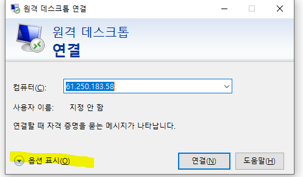
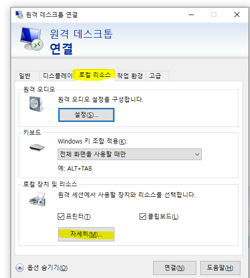
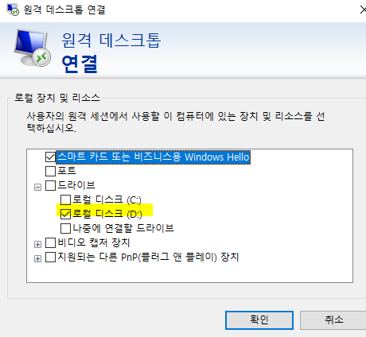

특징 및 주의사항
61.250.183.1 (Internet Explorer)
- *이 붙은 것
-
개발된 화면
-
Ex. 수주입력* (수주입력** => 버전2)
-
* 없으면 표준화면
-
현황 더블클릭 => 입력으로 jump
표준 테이블 수정이 많다 (Ace는 표준 테이블을 거의 수정하지 않는다)
+. Ace 표준 테이블 수정 시
-
더미 컬럼 추가
-
다른 테이블 하나 만들어서 필요한 컬럼, 외부키로 쓸 키 값 하나 추가 후 조인
*** 시트 저장이 테이블 단위가 아니라 행 단위
폼(화면) 구성요소
-
확장자
-
aspx
-
cs
-
csproj
-
resx
-
webinfo
-
sln (자동생성)
-
- SP
-
보통 aspx, cs, SP 수정 / 나머지는 새로 개발할 때 사용
-
aspx - 화면, 데이터를 보여주는 쪽
-
cs - 데이터, DB갔다오는 애
-
대부분 frm~ 으로 시작 (97%) / dlg~ (3%)
-
조회, 저장 다 가능
메뉴 어디 있는지 찾고 싶을 때
- 마스타 및 운영관리 - 모듈 - 메뉴구성조회

+. 메뉴에 없는건 '메뉴구성 안된폼조회' 에 있다
원격 연결 시 컴퓨터 D드라이브 나오게 하기



- 백업 필수
aspx 주석처리 시
'_'는 밑에줄을 이어주기 때문에 뒤에다가 주석처리하면 안된다